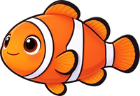
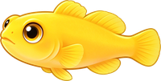
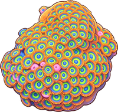

🐠
桌面小海缸开缸教程
从零开始，打造你的桌面微型海洋
LANHAI MARINE
1
欢迎来到海洋世界
现在你已经拿到了广东蓝海海洋科技有限公司的小海缸，就让我们开启一段神奇的海洋之旅吧！
或许你曾在海洋馆里惊叹于珊瑚的绚烂、小丑鱼的灵动，而现在，你即将把这一小片海洋搬进自己的家里、办公桌上。这份教程会手把手带你完成从"空缸"到"微缩海洋"的全过程。
💡
不要紧张，跟着步骤一步步来，你完全可以做到。先花几分钟了解你的小海缸，做到心中有数。
2
认识你的小海缸
🐚 什么是海水微缸？
你手上的小海缸是一个 15-20 厘米的微型海水缸（圈内常称为"微缸"或"Pico缸"）。虽然个头不大，却能容纳完整的微型海洋生态系统——活石、珊瑚、小型无脊椎动物，甚至一两条迷你小鱼，都可以在里头和谐共生。
🎯
微缸的魅力：体积小、不占地方、放在桌面就能随时欣赏。但正因为水体积小，水质变化比大缸快得多，需要我们多一点点细心。
⚙️ 你的海缸系统包含哪些部分？
🫧缸体超白玻璃
🔍过滤系统滤棉+活性炭
🌀循环水泵模拟洋流
💡灯光蓝白光谱
🌡️加热棒25-28℃
📊温度计实时监控
📌
不懂这些设备长什么样没关系，拿到产品后对照说明书认一遍就好。
🧪 核心原理——氮循环（非常重要！）
这是海水饲养中最核心的概念。理解了它，你就理解了为什么不能"今天开缸今天就放鱼"。
🐟 鱼的排泄物 / 没吃完的饲料
⬇️
⚠️
亚硝酸盐 NO₂⁻
有毒！
→
硝化细菌 B 分解
🔑
一个成熟的海缸 = 建立了足够强大的硝化细菌群落，能快速把有毒的氨转化为硝酸盐。这个过程需要 2-4 周，这就是后面要讲的"养水期"。
3
开缸前的准备
📋 设备与材料清单
在动手之前，请确保备齐了以下物品：
| 类别 | 物品 | 说明 |
|---|
| 必需 | 小海缸缸体+过滤+水泵 | 产品套装内包含 |
| 必需 | 海缸专用 LED 灯 | 需支持蓝光光谱 |
| 必需 | 加热棒（25-50W） | 根据缸体大小选择 |
| 必需 | 温度计 | 随时监控水温 |
| 必需 | 海盐 | 必须是海水专用盐！ |
| 必需 | 纯净水 | RO反渗透水或桶装纯净水 |
| 必需 | 盐度计（光学） | 比浮力式准确很多 |
| 必需 | 活石 | 约 0.5-1.5 公斤 |
| 必需 | 硝化细菌液/粉 | 加速养水进程 |
| 推荐 | 活沙/珊瑚底砂 | 装饰+辅助培养菌群 |
| 推荐 | 水质测试剂 | 氨、亚硝酸盐、硝酸盐 |
| 推荐 | 小抄网、长镊子、刮藻刀 | 日常打理工具 |
| 推荐 | 小水桶（专用） | 不要和家务混用 |
🚫
关于水的特别提醒：自来水含有氯、重金属等有害物质。即使除氯处理过也可能含其他杂质。强烈建议使用纯净水或 RO 反渗透水——这是养好海缸的第一道保障。很多新手失败，问题就出在水上。
📍 摆放位置的选择
- ✓ 平稳的台面——装满水后有重量
- ✓ 靠近电源——灯、泵、加热棒都需插电
- ✓ 避免阳光直射——直射会导致藻类爆发和水温剧烈波动
- ✗ 远离空调出风口、暖气片
- ✗ 远离厨房——油烟可能污染水体
- ✓ 便于观察和操作——留出换水、打理的空间
4
开缸步骤（手把手）
东西都准备好了，我们正式开始！
🔧 第一步
清洗缸体和设备
- 用干净的湿布擦拭缸体内外，不要使用任何洗洁精、肥皂或化学清洁剂——残留物对海洋生物是致命的
- 如有底砂/活沙，用清水冲洗几遍至水不再浑浊（用纯净水最后冲一遍更好）
- 将滤材（滤棉、生化球等）用清水冲洗一下
- 活石不需要洗，保持它上面附着的微生物
⚠️
从这一刻起，如果手擦了护手霜、涂了防晒、碰过化学品，都要先彻底洗干净再接触缸和器材。最好养成操作前用清水冲手的习惯。
🏖️ 第二步
铺设底砂
- 将洗好的底砂/活沙均匀铺在缸底
- 厚度约 1-2 厘米 即可，不用太厚（微缸空间宝贵）
- 可以前低后高，营造纵深感
🪨 ✨ 🏝️
💧 第三步
加水和化盐
这是最需要耐心的一步。盐度不对，后面一切免谈。
- 先加水，再加盐。将纯净水缓缓倒入缸中（垫一个盘子或塑料袋在砂面上，避免水流冲乱底砂），加到七到八分满
- 开启循环水泵，让水流动起来
- 少量多次地加入海盐，每次加一点，完全溶解后再加下一批
- 用盐度计测量。目标盐度：1.020-1.025（比重），对应 30-33 ppt
- 盐度高了加纯净水稀释，低了继续加盐，直到稳定在目标范围
🔬
光学盐度计怎么用？
① 掀开盖板，滴 2-3 滴缸水在棱镜上
② 盖上盖板，对着光源看
③ 读数线 = 蓝色和白色交界的位置
④ 每次用完清水冲洗、擦干
推荐新手：盐度 1.023-1.024，大多数海洋生物最舒适
🔌 第四步
安装并开启设备
- 安装加热棒：放入过滤格或缸内水流好的位置，设定 25-28℃（推荐 26℃）
- 安装温度计：贴在方便观察的位置，不挡住观赏面
- 安装灯光：架在缸顶，先不要开（活石放好后再开灯）
- 确认水泵正常运转：检查出水口方向，水流应能带动全缸循环
🪨 第五步
放入活石造景
活石是海缸的"心脏"——不仅是造景材料，更携带着大量天然微生物（包括硝化细菌），是生态系统的基石。
- 先构思再动手：在缸外试着摆一摆，找好喜欢的造型
- 活石放入缸中，轻轻放置确保稳定——不要靠玻璃太近，留出刮藻和鱼游动的空间
- 可以堆叠 2-3 块，留出洞穴和缝隙，日后生物有躲藏的地方
- 造景原则：稳定第一 + 留白第二（不要塞满）
🎨
造景建议：微缸空间有限，不超过 2-3 块石头，给水和生物留出空间。试试"主石+辅石"的简单构图。
🧫 第六步
加入硝化细菌，开始养水
- 按产品说明剂量，将硝化细菌液/粉倒入缸中（通常是倒入过滤格或水流大的位置）
- 开启灯光（每天 8-10 小时即可，初期可以少开）
- 让整个系统运转起来——水泵 24 小时不停，加热棒恒温 26℃
⏳ 第七步
耐心等待——养水期的观察
这是新手最难熬、但也最重要的一段时间：2-4 周的养水期。
🪸 暴藻三部曲
第 3-7 天
🟤 褐藻期
活石和缸壁上出现褐色薄膜——正常！硅藻爆发，说明硝化系统在建立中
第 7-14 天
🟢 绿藻期
褐藻褪去，长出绿色丝状藻——正常！继续等待
第 14-28 天
🟣 钙藻期
石头上出现紫色/粉色的硬质斑点——好现象！水质趋于成熟
养水期间你该做什么：
- 🔄 每周换水 10%-20%
- 📏 每周测一次水质（氨→亚硝酸盐→硝酸盐）
- 👀 每天观察：水清澈吗？活石上有什么变化？
- ⏳ 忍住不放生物！
✅ 什么时候可以放生物？
用测试剂测水质，三个条件同时满足且稳定 3-5 天：
氨 = 0
亚硝酸盐 = 0
硝酸盐 < 20 ppm
🛑
新手最容易犯的错：开缸 3 天看水清了就急着买鱼放进去。请一定忍住！水清 ≠ 水好。看不见的氨和亚硝酸盐正在高峰。耐心是这个阶段最好的投资。
🎉 第八步
水质达标，迎接第一批居民
恭喜！水质达标了，现在可以放生物了。请遵循以下原则：
- 循序渐进：每次只加 1-2 个生物，间隔至少 1-2 周
- 先易后难：先放清洁生物（食藻螺、寄居蟹）→ 再放珊瑚 → 最后放鱼
- 入缸前要过温过水：
🌡️
过温
装生物的袋子漂浮在缸里
15-20 分钟，让温度一致
💧
过水
每 5-10 分钟舀入少量缸水
重复 4-5 次，逐渐适应
⚠️
结束后用抄网将生物捞入缸中，不要把袋子里的水倒入缸中！
5
后续日常维护
维护不复杂，但需要规律。养成习惯就好。
☀️
每日维护（1-2 分钟）
- 👁️ 看一眼：设备运转正常？灯亮吗？水流正常？
- 🌡️ 看温度：在 25-28℃ 范围？
- 🐠 看生物：珊瑚开了吗？鱼活跃吗？
- 💧 看水位：蒸发导致水位下降？（微缸蒸发很快！）
📅
每周维护（10-15 分钟）
- 💧 换水 10%-20%（新水必须提前化好！）
- 🧹 刮藻刀清理缸壁藻类
- 🔬 测硝酸盐，确保 < 20 ppm
- 🧽 湿布清洁缸外壁
🗓️
每两周/每月维护
- 🧻 更换滤棉（每 2-4 周）
- 🖤 更换活性炭（每 3-4 周）
- 🔌 检查设备：水泵、加热棒、电线
💧 换水步骤详解
- 提前准备新水：纯净水+海盐调好，盐度 1.023-1.024，调至和缸内同温
- 关掉水泵和加热棒（安全起见）
- 用管子或小杯取出旧水（约总水体 10%-20%）
- 顺便吸一下底砂表面和死角的积污
- 将新水缓缓倒入缸中（垫盘子/塑料袋，避免冲乱造景）
- 开启设备，检查一切正常
6
生物选择指南
微缸水体小，不是啥都能养。以下推荐适合 15-20cm 微缸的生物：
🐠 鱼类（最多 1-2 条！）
选鱼要满足：体型小、活动范围小、性格温和。

小丑鱼（公子小丑）
最经典的海水鱼，皮实好养。微缸只能养 1 条幼体

虾虎鱼（天线虾虎、黄蟋蟀虾虎）
体型极小，性格有趣，非常适合微缸
🚫
不适合微缸：吊类（蓝吊、黄吊）、神仙鱼、蝶鱼、大型隆头鱼——体型太大或游动需要更大空间。
💡
微缸养 1 条小鱼就足够了。甚至可以纯养珊瑚和清洁生物，维护更轻松，也一样很美。
🪸 珊瑚（微缸的主角）
适合微缸的以软体珊瑚和 LPS为主。

纽扣珊瑚
颜色丰富，成片生长，新手首选
★★★极易
⚠️
SPS（小水螅体石珊瑚）如鹿角珊瑚等，对水质和光照要求极高，不建议新手尝试。
🦀 清洁生物（开缸功臣）
📊
数量建议：1-2 只食藻螺 + 1 只寄居蟹就足够微缸的清洁需求。放太多它们会饿死。
7
常见问题与注意事项
🍽️ 喂食原则
- 微缸水体小，应该是"极少、少次"
- 🐠 鱼：每天 1 次，每次几颗微粒饲料，30 秒内吃完为佳
- 🪸 珊瑚：每周 1-2 次，珊瑚液体饲料或浮游生物液，按说明剂量减半使用
- 🥇 黄金法则：宁少勿多。饲料沉底没吃完 → 污染水质 → 氨飙升 → 死生物
🖐️ 尽量不要把手伸入鱼缸
- 手上的油脂、汗液、洗手液残留都会污染水质
- 微缸水体小，一点点污染就会被放大
- 如果必须伸手，先用清水彻底冲洗双手和手臂，不要用肥皂
- 更好的做法：用长镊子或专用工具操作
💧 蒸发补水——微缸最重要的事之一！
微缸蒸发非常快——可能一天就能蒸发掉 5%-10% 的水。
水蒸发了，盐不会蒸发，所以盐度会越来越高！
- 📏 每天检查水位，补充纯淡水（不加盐！）
- 🔖 如果缸有过滤格，水位线通常标在泵格位置
- 🛒 可以买一个自动补水器（几十块钱），省心很多
- 🛑 忘了补水 → 盐度飙升 → 生物死亡，微缸新手翻车的头号原因！
🚨 常见异常与应对
| 异常现象 | 可能原因 | 解决方法 |
|---|
| 水变浑浊/发白 | 硝化系统崩溃 | 少量换水，暂停喂食，等待恢复 |
| 缸壁长满藻 | 营养盐过高/光照太久 | 减少光照，增加换水，检查喂食量 |
| 珊瑚不开/缩起 | 水质波动、盐度异常 | 测水质，确认盐度和温度 |
| 鱼呼吸急促/浮头 | 缺氧或氨中毒 | 加大水面扰动，测氨，必要时大量换水 |
| 水面有油膜 | 水面缺乏扰动 | 调整出水口方向，让水面有波纹 |
| 鱼身上有白点 | 白点病（海水小瓜虫） | 微缸难用药，建议隔离治疗。预防远胜治疗！ |
🩺
遇到问题别慌，也别急着下药。微缸的第一应对手段永远是：测水质 → 少量换水 → 观察。大部分问题通过换水都能缓解。
8
写在最后
恭喜你读到了这里！你已经比 90% 冲动买缸的新手更有准备了。
海洋缸的乐趣不只是"好看"——当你看到纽扣珊瑚从一小撮蔓延成一片花海，当你看到小丑鱼钻进榔头珊瑚里安心地睡觉，当你发现石头上不知什么时候冒出一只小小的管虫……那种"亲手搭建了一个小小世界"的成就感，是任何装饰品都给不了的。
🌟 记住几个最重要的原则：
1. 🐢 慢，就是快。耐心是海缸的第一要素
2. 🧪 水质，永远是第一位。水好了，生物自然会好
3. 💧 规律的换水，胜过一切"神药"。
4. 📏 有疑问，先测水。测试剂是最诚实的答案
🐠 开始你的海洋之旅